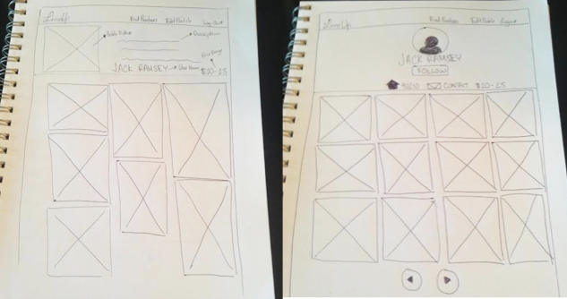
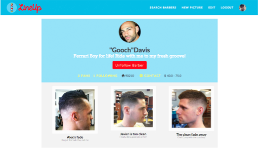
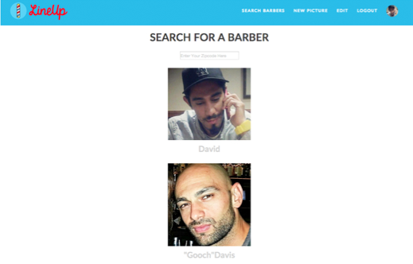

What's LineUp and Why Did I Create it?
After working as a freelance barber for many years, I often heard about the difficulty my clients had while trying to find a reliable barber...before finding me of course :) But seriously, the barbers who taught me the craft were losing clientele after the economy went sour. I also found that any time I traveled to a foreign place, I could never find a decent barbershop. LineUp is a web application and personal project I built while taking a class at General Assembly that focused on Ruby on Rails. The app simply allows users to find barbers by zipcode.
My Role
This was my personal project so I wanted to learn as much as I could. I started out designing different pages with pen and paper before wireframing and doing the front end development. Eventually once I felt confident with the skeleton of the design, I worked on the logic for the back end development of the site. My original objective was to create an Uber for barbers while using the Yelp API to help rate haircuts. But I realized the key with the project was to kick off my Rails coding journey, not overwhelm my self. Plus, haircuts are subjective, so why rate them?
These were sketches I created to flesh out my ideas for a barber's profile page. I thought the page on the left could look visually a bit more intruiging, but I lacked the skill set to get this working with CSS at the time so I stuck with something basic.
Challenges
As a newbie to design and code, building a site with the functionality I wanted was very complex with the skill set I had at the time. Such as having two different types of users (barbers and customers) who could log in with different accounts, follow friends, gain followers, like and upload pictures and search for barbers. Setting up Amazon Web Services to upload pictures to the cloud was a headache! Eventually I even got charged $3,000 for exposing my secret keys on GitHub and getting hacked, lesson learned! The challenges were never ending! So I had a friend named Quincy who had more of an affinity toward Rails and he helped me out with the logic when I struggled. We struggled together! And we learned a ton.
This is the first screenshot I took when things began to work! The design was crap, but things were working and I was fine with that! Look at those baby blue hues, I was calling the barber Gods...
The Aftermath
LineUp helped me gain confidence in my abilities - I've easily put in 300 - 400 hours of learning with this project while iterating through designs whenever possible and at this point I'm no longer fearful with going out of my technical comfort zones.
I went from having an idea, recognizing the challenges and building an actual website with limited coding skills. Since working as a designer at M-GO, I see that many times we think of endless possibilities as designers because "it can't be as hard as they say" . We ask why a developer's estimated time line to build is going to take so long. Through my struggles with LineUp, I've devleoped empathy for how developers think. Yes, there will always be someone who will say its impossible. But understanding why is the first step in knowing how to create a solution. Through all the mistakes I made with this project, it truly has made me grow as a designer and as a human being. You can visit the website here and check out a scrappy iOS prototype for kicks.